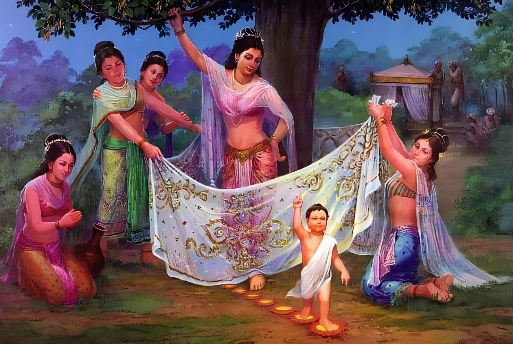

Namo tassa bhagavato arahato sammāsambuddhassa
Homage to the Most Venerable One, the Arhat, the Self-Awakened One
Namo tassa bhagavato arahato sammāsambuddhassa
Homage to the Most Venerable One, the Arhat, the Self-Awakened One
Namo tassa bhagavato arahato sammāsambuddhassa
Homage to the Most Venerable One, the Arhat, the Self-Awakened One
Sabbapāpassa akaraṇaṃ,
Do no evil
Kusalassa upasampadā ;
Accumulate good things
Sacitta pariyo dapanaṃ,
Encourage your mind to comprehend
Etaṃ buddhāna sāsanaṃ
This is Buddha's teaching.
The picture depicts the last birth of the Bodhisattva.
Women, except for the Bodhisatta's mother in his last existence, tend to give birth either after or before the ten-month gestation period. They do not know the exact time when their children will be born. Their births occur unexpectedly.
As for the Bodhisatta's mother in his last existence, it is quite different. Her pregnancy lasts exactly ten full months or 295 days from the moment of conception. Moreover, the Bodhisatta is born only when the mother assumes a standing posture. When he is born, he is immaculately pure, without the slightest impurity, like a ruby placed on a freshly woven cloth of Kasiya origin.
The average baby has to endure a very difficult experience during birth. When the mother's first spasms signal the impending birth, they set in motion a sequence of events that put the baby in a head-down position; it also has to crawl out through the tight grip of hard muscles, experiencing excruciating pain that can be compared to a person falling into a bottomless pit.
But unlike ordinary births, Bodhisattvas always emerge into the world as easily as water strained through a sieve. Like a Dhamma preacher slowly and calmly descending from the Dhamma throne after delivering a speech, or like a person slowly approaching a shrine (stupa), the Bodhisattva emerges in ease and comfort with legs outstretched, arms open, eyes wide open, mindful and understanding, completely without fear.
When Queen Maha-Maya had reached the last stage of her pregnancy and had carried the Bodhisattva in her womb for ten full months, as if she were carrying butter in a bowl, she felt an urge to visit the city of her relatives, Devadaha. She asked permission from the ruler Suddhodana, saying, "Great King, I would like to visit my relatives in Devadaha."
King Suddhodana gave his consent and made the necessary arrangements for the journey. The entire stretch of road from Kapilavatthu to Devadahi was repaired and leveled evenly; banana plants, betel palms and water pots filled to the brim were placed on stands on both sides of the road; flags and banners were also raised on pillars along the road. After preparing and decorating the road, the king ceremoniously seated Maha-Maya on a newly made golden palanquin, which was carried by many servants, accompanied by guards and servants for the various duties of the journey. With such pomp and grandeur, Maha-Maya was sent to the city of Devadahi.
Between the towns of Kapilavatthu and Devadaha there was a grove of sala trees called Lumbini Garden, which was often visited for recreation by people from both kingdoms. When Maha-Maya Devi approached it, all the sala trees in the grove were in full bloom, from the bottom of the tree to the topmost branches (which was one of the many omens that will be discussed below).
Among the flowers and branches of the sala trees, swarms of bumblebees hummed and flocks of birds of many kinds chirped, producing sweet melodious sounds. The entire grove was so beautiful and pleasant that it could be compared to the Garden of Sakka, the Ruler of the Devas.
Because of the sounds emanating from the bees, which buzzed delightfully among the buds and flowers, intoxicated by the nectar produced by the fragrant sala flowers, Lumbini was very similar to the Nandana grove, which gives pleasure to the devas.
Seeing such a delightful garden of Lumbini, Maha-Maya Devi felt the desire to rest there. The ministers asked permission from Raja Suddhodana and with his consent they entered the garden carrying Maha-Maya on a golden palanquin.
At the moment when Maha-Maya Devi entered the garden of Lumbini, all the devas proclaimed with a noise that reverberated throughout the ten thousand world system: “Today the Bodhisatta will be born from the womb of his mother.”
Devas and Brahmas from ten thousand world systems gathered, filling all space, bringing with them a great variety of treasures as gifts, to pay homage and celebrate the birth of the Bodhisattva. The firmament was covered with their white umbrellas, and the entire universe resounded with their enchanting songs and heavenly music.
As soon as Maha-Maya Devi entered the Lumbini garden, she felt a sudden urge to grab a branch of a flowering sala tree with her hand. As if animated, the branch bent down until it reached Maha-Maya's palm. This miraculous event excited many of the people accompanying her.
Maha-Maya stood holding a sala branch in her outstretched right hand, adorned with newly made golden bangles. Her great beauty at that moment resembled the moon that had just emerged from dark gloomy clouds, showing signs of impending rain, or lightning that blinded in the twinkling of an eye, or a celestial nymph appearing in the Nandana grove. Holding the sala branch, Queen Maha-Maya felt the unmistakable signs of impending childbirth. Her retinue quickly cordoned off the area with curtains and withdrew.
In an instant, ten thousand world systems, together with the Great Ocean, roared, shook, and trembled like a potter's wheel. The Devas and Brahmas joyfully welcomed the event, showering the area with celestial flowers; some musical instruments automatically emitted melody. The entire universe in that region opened up with unobstructed visibility in all directions. These and other strange miraculous phenomena, thirty-two in all, occurred simultaneously and marked the birth of the Bodhisatta. As a flying jewel emerging from the top of Mount Vepulla hovers and then slowly descends upon a prepared vessel, so the Bodhisatta, splendidly adorned with major and minor physical signs, emerged pure from the shrine-like womb of Maha-Maya on the full moon of May (Vesakha), the summer month of 563 B.C., when the moon was in conjunction with the constellation Visakha.
At the moment of the Bodhisatta's birth, two springs of pure water, one warm and one cold, poured from the sky and fell on the already pure bodies of the Bodhisatta and his mother as a sign of respect, thereby allowing them to balance the element of fire (tejo) in their bodies. The Four Great Brahmas, free from sensory defilements, received the Bodhisatta in a golden net at the moment of his birth. They then placed him before his mother and said, "Great Queen, rejoice, a son of great power has been born to you!"
Then the Four Great Kings received the Bodhisatta from the hands of the Four Brahmas in an antelope skin. And again from the hands of the Four Great Kings, the people received the Bodhisatta in a sheet of white cloth. Then, coming out of the hands of the people, the Bodhisatta stood firmly on his feet and looked in the eastern direction. When he did so, the thousands of world systems in the east became one continuous stretch of open space without any barriers or boundaries between them. And the devas in the eastern part respectfully paid homage to the Bodhisatta with incense, flowers, etc. and said: “Noble man, in this eastern direction there is no one who can be your equal. How can there be anyone who is superior to you?”
In the same way, the Bodhisatta looked at the other ten directions – the four cardinal directions, the four intermediate directions, the descending direction and the ascending direction – one after the other. In all these directions, he saw no one equal to himself. After this, he turned his face to the north from where he stood and walked forward seven steps. The Bodhisatta was followed by Maha-Brahma, who carried a white umbrella over his head, and Deva Suyama, who held the insignia of royalty. Other devas with the remaining symbols of royalty, such as the sword, crown, etc., also followed behind him. The heavenly beings in this procession were not visible to humans.
When the Bodhisatta walked, he walked on the natural earth, but to people it seemed as if he was walking on air. The Bodhisatta walked without clothes, but to people he seemed fully clothed. Being a newborn child, to people he seemed like a mature child.
What has been related so far in connection with the Bodhisatta's taking the seven steps in the northern direction corresponds to the commentaries on the Chronicles of the Buddhas ( Buddha-vamsa), the Collection of Long Discourses ( Digha-nikaya), and the Tales (Jataka).
While the show of respect continued, the pleasing spectacle of devas and humans melodically blowing thousands of conch shells, playing heavenly and earthly musical instruments, and joyfully dancing female deities, the Bodhisatta, having taken seven steps, stopped in the northern direction. At that moment, all the humans, devas, and brahmas remained completely silent and looked expectantly, thinking, "What will happen next?"
When he stopped after seven steps in the north direction, the Bodhisatta let out a fearless roar:
Aggohaṁ asmi lokassa!
Jeṭṭhohaṁ asmi lokassa!
Seṭṭhohaṁ asmi lokassa!
Ayaṁ antimā jāti!
Natthi dāni punabbhavo!
I am superior to all living beings of the three worlds! I am the greatest among living beings of the three worlds! I am the most exalted among all living beings of the three worlds! This is my last birth! I will have no more births!
When the Bodhisatta made this bold speech, there was no one who could challenge or refute him; the whole multitude of people, devas and brahmas began to offer their congratulations.
The unusual events that occurred during the Bodhisatta's birth were omens, each of which had its own meaning.
1. The Bodhisatta's stable posture, with both feet evenly placed on the surface of the earth, was an omen indicating his future attainment of the four bases of psychic power (iddhi-pāda). The four bases are concentration (samādhi), conditioned by:
- Intention, purpose, desire or zeal (chanda)
- By effort, energy or will (viriya)
- The active process of thinking or consciousness (citta)
- By investigating or breaking down phenomena into parts (vīmaṃsā)
“When the four bases of psychic power are developed and cultivated in this way, a monk can wield various kinds of power: being one, he becomes many; being many, he becomes one; he appears and disappears; he passes unhindered through walls, walks on water, etc.”
2. The Bodhisatta's turning to the north was a foreshadowing of his future superiority over all living beings.
3. The Bodhisattva's seven steps were a foreshadowing of his future attainment of the seven factors of Awakening (bojjhaṅga), the jewel of the Dhamma:
1. Mindfulness (sati)
2. Investigation of dhammas (dhamma-vicaya)
3. Effort (viriya)
4. Delight (pīti)
5. Serenity (passaddhi)
6. Concentration (samādhi)
7. Equanimity (upekkhā)
4. The cool hue of the celestial white umbrella carried by Brahma over the Bodhisatta was an omen indicating his future attainment of the fruit of Arahat.
5. The Bodhisatta's acquisition of the five symbols of royal power was an omen signifying his future attainment of the five kinds of liberation (vimutti):
1. Liberation through suppression of hindrances (vikkhambhana-vimutti)
2. Liberation through the opposite or instantaneous liberation from the view that conditioned phenomena are permanent, unchanging and have a self (tad-aṅga-vimutti)
3. Liberation through cutting off, i.e. liberation achieved by eradicating the defilements upon attaining the four stages of the path. In this state, after gaining knowledge of the Noble Path, the fetters are destroyed like a tree struck by lightning (samuccheda-vimutti)
4. Liberation through tranquility, i.e. freedom from defilements, achieved through the four fruits (phala). This is the attainment of tranquility. With such liberation there is the disappearance of fetters, which are forever calmed (paṭippassaddhi-vimutti)
5. Liberation through escape, salvation. Freedom from defilements, achieved through the realization of Nibbana. In this type of liberation, known as nissaraṇa-vimutti, all wrong views are destroyed.
6. The Bodhisatta's vision of the ten directions without any obstacles was an omen indicating his future attainment of unobstructed knowledge (anāvāraṇa-ñāṇa).
7. The Bodhisattva's fearless roar, "I am the highest, the greatest, and the most exalted!" was an omen indicating his future turning of the Wheel of Dhamma (Dhamma-cakka), which no man, deva, or brahma could stop or turn back.
8. The Bodhisatta's fearless roar, "This is my last birth! There will be no more births for me!" was an omen indicating his future attainment of Nibbana without remainder (anupādisesa-nibbāna).
The Bodhisatta spoke immediately after his birth, not only in his last existence as Prince Siddhartha, but also in his two previous births: when he was born to become the wise Mahasadha, and when he was born to become King Vessantara. Thus there were three existences in which he spoke at birth. Here is a brief explanation:
1. In his existence as the wise Mahasadha, the Bodhisatta emerged from his mother's womb holding a piece of sandalwood which had been placed in his hand by Sakka, the Lord of the Devas. His mother, seeing the object in the hand of her newborn child, asked, "My dear son, what have you brought with you in your hand?" "Mother, it is medicine," replied the Bodhisatta. Therefore, he was originally called Osadha Kumara, which means "Medicine Boy." The medicine was carefully kept in a jar. All the patients who came with various ailments such as blindness, deafness, etc., were cured by this medicine, beginning with the Bodhisatta's wealthy father, Sirivadhana, who was cured of a headache. Thus, because of the great effectiveness of his medicine, the young Bodhisatta later became widely known as Mahasadha, the "Great Medicine," the possessor of the most effective medicine.
2. During the Bodhisatta's existence as King Vessantara, at the moment of his birth he extended his right hand with open palm and said, "Mother, what do you have in your palace that I can generously give away?" The mother replied, "My dear son, you are born in wealth in this golden palace." The mother then took the child's open hand, placed it on her own palm, and put in a bag containing a thousand silver coins. Thus the Bodhisatta at birth also spoke in existence as King Vessantara.
3. And as has been related above, in his last existence as Prince Siddhartha, the Bodhisatta let out a fearless roar at the moment of his birth.
Also at the moment of the Bodhisatta's birth certain events clearly manifested themselves. These events and what they foreshadowed are explained in the Mahāpadāna Sutta (DN 14) and in the commentaries of the Chronicles of the Buddhas (Buddha-vamsa).
1. At the time of the Bodhisattva's birth, 10,000 world systems shook. This was an omen that heralded his attainment of omniscience.
2. The devas and brahmas living in the 10,000 world systems gathered in one place. This was an omen, foreshadowing the gathering of the devas and brahmas listening to the discourse of the Wheel of Dhamma (Dhamma-cakka) after its setting in motion.
3. The Devas and Brahmas were the first to receive the Bodhisatta at his birth. This was an omen that foreshadowed his attainment of the four absorptions in the form realms (rūpāvacara-jhāna).
4. People accepted the newborn Bodhisatta after the devas and brahmas. This was an omen that foreshadowed his attainment of the four absorptions into the formless worlds (arūpāvacara-jhāna).
5. Stringed instruments such as harps produced music without being played. This was an omen that heralded his attainment of the nine successive attainments (anupubba-vihāra-samāpatti), consisting of the attainment of the four absorptions in the form realms, the four absorptions in the formless realms, and the attainment of cessation (nirodha-samāpatti).
6. Skin instruments such as large and small drums made sounds without being played. This was an omen, foreshadowing that his beating of the sacred Dhamma drum would be heard by both devas and humans.
7. The shackles that held people in slavery were broken. This was an omen that heralded the complete removal of the vain belief "I am."
8. The illnesses of many patients disappeared, like dirt on copper washed away by acid. This was an omen, heralding the attainment of the four noble truths by people and the eradication of the sufferings of samsara.
9. Those who were blind from birth could see all forms and colours just as normal people do. This was an omen that foreshadowed the attainment of the divine eye (dibba-cakkhu) by humans.
10. Those who were deaf from birth could hear all sounds as well as normal people. This was an omen that foreshadowed man's acquisition of the divine ear (dibba-sota).
11. The knees, who could not walk, were able to stand on their feet. This was an omen, foreshadowing the attainment of the four bases of psychic power (iddhi-pāda).
12. Those who were mute from birth were able to utter words. This was an omen, heralding the attainment of the four foundations of mindfulness (satipaṭṭhāna).
13. The ships that were making dangerous voyages abroad all reached their ports. This was an omen that heralded the attainment of the fourfold analytical knowledge (paṭisambhidā-ñāṇa).
(a) understanding the results of causes, things that depend on conditions;
(b) seeing Nibbana;
(c) the meaning of any words (in Pāli) and operating them to convey the Dhamma;
(d) resultant consciousnesses (vipāka) (i.e. citta and its concomitant cetasika);
(d) functional consciousnesses (kiriya) (i.e. citta and its concomitant cetasika).
The Buddha became endowed with the above five kinds of attha as soon as he attained Buddhahood. Being endowed with analytical knowledge of attha, the Buddha knew everything clearly and comprehensively and was able to explain it to others in the best possible way.
(ii) Dhamma paṭisambhidā-ñāṇa
Comprehensive knowledge of phenomena.
Being endowed with analytical knowledge of Dhamma, the Buddha knew each dhamma in detail and comprehensively and was able to explain it to others.
(iii) Niruṭṭi paṭisambhidā-ñāṇa
Analytical knowledge of the language of the Aryans (i.e. magadhī) regarding Dhamma (causes). Being endowed with analytical knowledge (of words and grammar) of the natural language of the Aryans (i.e. magadhī), the Buddha was able to skillfully teach the dhamma to others in it.
Indeed, this is so. Dhamma requires an abundance of words. For each element of dhamma, a wide range of vocabulary, grammatical forms and nuances of the natural language of the Aryans (i.e. magadhī) were at the Buddha’s ready disposal. For example, the Dhamma “phassa” (contact) is expressed in various forms such as “phasso” (contact), “phusana” (being in contact), “samphusana” (full contact), etc. Similarly, lobha (greed) is explained by more than a hundred terms (see Dhammasaṅgaṇī, paragraph 456).
(iv) Paṭibhāṇa paṭisambhidā-ñāṇa
This is the Analytical Knowledge according to which attha paṭisambhidā-ñāṇa has the discriminating and comprehensive knowledge of results; dhamma paṭisambhidā-ñāṇa has the discriminating and comprehensive knowledge of the five Dhammas; niruṭṭi paṭisambhidā-ñāṇa has the analytical knowledge of words and grammar. In short, this is the knowledge of the three kinds of analytical knowledge, that knowledge which regards all knowledge as an object and discriminates between them. The Buddha became endowed with this knowledge of the kinds of knowledge as soon as he attained Buddhahood.
(Note: The fourth of the four paṭisambhidā-ñāṇa discerns the functions of the other three Knowledges, but is unable to perform these functions himself. He is like a preacher without a good voice who is well versed in the knowledge of the scriptures, but is unable to preach as well as another preacher who has a good voice but has a poor knowledge of the scriptures.)
14. All kinds of precious stones, both heavenly and earthly, sparkled with the brightest light. This was an omen foreshadowing the attainment of the light of Dhamma. It was also an omen foreshadowing the brilliant glory of the Buddha, who spread the light of Dhamma among those who sought to obtain it.
15. Loving-kindness was present at that moment among all beings who were at enmity with each other. This was an omen that foreshadowed the attainment of the four sublime states (Brahma-vihāra):
- goodwill (mettā),
- compassion (karuṇā),
- rejoicing (muditā),
- equanimity (upekkhā).
16. The fires of hell went out at that moment. This was an omen, heralding the cessation of the fires of greed, anger and other obscurations.
17. In the hell of Lokantarika, which is usually in total darkness, a light appeared. This was an omen, heralding the ability to dispel the darkness of ignorance and shed the light of wisdom.
18. The river water, which was always flowing, stopped flowing at that moment. This was an omen, foreshadowing the attainment of the fourfold certainty (catu-vesārajja-ñāṇa):
1. Confidence in one’s own Awakening.
2. Confidence in the complete eradication of passionate desire.
3. Confidence in what is an obstacle on the way.
4. Confidence in omniscience.
19. All the waters in the great ocean at that moment became sweet in taste. This was an omen, heralding the attainment of the unique sweet taste of peace that arises from the cessation of obscurations.
20. There were no storm winds blowing anywhere, only a gentle breeze, cool and pleasant. This was an omen, foreshadowing the disappearance of 62 kinds of wrong beliefs.
21. All kinds of birds in the sky, on the tops of trees or mountains at that moment landed on the ground. This was an omen, foreshadowing that people, having heard the teaching, would take refuge in the Three Treasures for life.
22. The moon shone much brighter than ever before. It was an omen that people would achieve satisfaction.
25. A torrential rain fell on all four continents. This was an omen, heralding the heavy rain of the Dhamma of immortality.
26. All the people at that moment ceased to feel hunger. This was an omen heralding their attainment of the deathless Dhamma of mindfulness associated with the body (kāyagatāsati), or liberation from the thirst for defilements after enjoying the deathless food of mindfulness associated with the body.
27. At that moment all the people stopped feeling thirsty. This was an omen, heralding their attainment of the bliss of arahatship.
28. The closed doors at that moment began to open by themselves. This was an omen, heralding the opening of the gates of Nibbāna, that is, the Eightfold Noble Path.
29. The flower and fruit trees bore fruit. This was an omen, foreshadowing that people would bear the flowers of liberation (vimutti) and the fruits of the four noble fruits (ariya-phala).
30. All 10,000 world systems were covered with a single banner of anticipation of victory. It was an omen heralding the spread of the Noble Path.
At the moment of the Bodhisattva's birth, the following seven were born simultaneously:
1. Princess Yasodhara, also known as Bhaddakachchana, mother of Prince Rahula.
2. Prince Ananda.
3. Charioteer Channa.
4. Minister Kanudaiya.
5. Royal stallion Kantaka.
6. Maha Bodhi Tree.
7. Four containers of gold appeared.
Because they were born or appeared at the same time as the Bodhisatta, they were known as the seven descendants of the Bodhisatta. Of these seven:
1. Princess Yasodhara Bhaddakachchana was born in the family of Suppabuddha, the king of the city of Devadaha, and Queen Amita.
2. Prince Ananda was the son of the Sakyan Amittodana, the younger brother of King Suddhodana.
3. The Maha Bodhi tree grew in the center of the place of victory where the Buddha attained Awakening, in the Uruvela forest.
4. Four large containers of gold appeared on the premises of the Kapilavatthu Palace.
After the birth, the inhabitants of the two cities of Kapilavatthu and Devadaha transported Queen Maha Maya and her noble son Bodhisatta back to the city of Kapilavatthu.